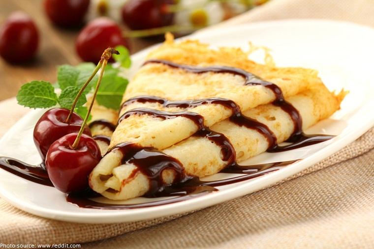
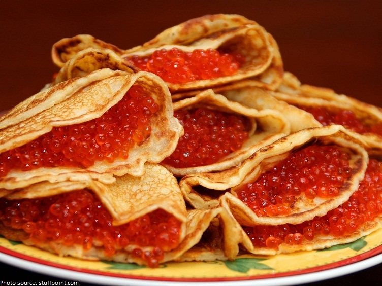
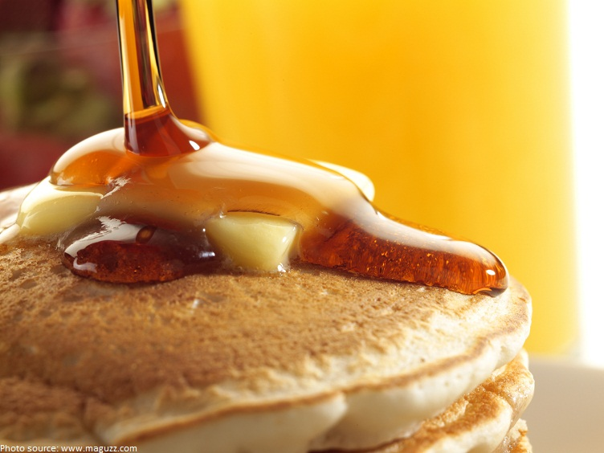

A pancake is a flat cake, often thin, and round, prepared from a starch-based batter that may also contain eggs, milk and butter and fried on both sides in a pan, often with oil or butter.
History Of Pancakes
The history of the pancake traces back hundreds of years. That delicious breakfast you enjoy now was also enjoyed by people in medieval times. There are countless variations on the pancake that range from crepes, to Dutch, and flapjacks. Many of these depend on the region the pancake is being made, the history of that culture, and the ingredients available to them. The first official pancake recipe dates back to the sixteenth century. The recipe was by a Dutch cook. It was accompanied with numerous illustrations and instructions. Throughout the Medieval Age pancakes evolved into the closest resemblance of pancakes today. People started making them with cornmeal, flour, or even potatoes depending on what they had available to them. Many would also have an added fruit or other sweet ingredient for flavor. The pancakes of history were cooked using a baking stone. This is where the stone used to cook them is heated by a fire or stove and the batter is then cooked on the hot stone. Pancakes were also associated with the Christian Lent. It was a way for people to use up their eggs, fats, and other ingredients that they weren’t permitted to eat during the time of Lent. Pancakes eventually made their way to America. There are some indications that Native Americans had their own version of the pancake. They used similar, but alternate ingredients. But all these varieties have morphed into the pancakes we know today. The most popular version is made from flour, eggs, buttermilk, and baking powder. Throughout the world different cultures have their own version of the pancake. In France it’s known as a crepe. In Scotland they make a version that is very similar to the flapjack. Australians will often eat them for dessert instead of breakfast. Germans will cut them into strips and eat them alongside soup. Swedish are known for frying or baking their pancakes and topping them with fruit and whipped crème. The history of pancakes is a wide ranging one. Dating back to medieval times and spanning all over the globe. From its most basic recipe the pancake is very simple. Flour, baking powder, eggs, and buttermilk are about as simple as a recipe gets. The great part about pancakes is that it’s easy to change the recipe to fit the taste of anyone. Who knows how much more the pancake can change in the future. Everyday someone is coming up with a new combination of ingredients.
Fun Facts About Pancakes
- The Ancient Greeks made pancakes called tagenias (τηγανίτης) meaning “frying pan“.
- The earliest attested references on tagenias (pancakes) are in the poems of the fifth century B.C. poets Cratinus and Magnes.
- Tagenites were made with wheat flour, olive oil, honey, and curdled milk, and were served for breakfast.
- Romans eat sweet and savoury dishes of a meal called Alita Dolcia made from milk, flour, eggs and spices.>
- If you take a trip to the Magic Kingdom and stop in for breakfast at Frontierland’s River Belle Terrace, you’ll be treated to pancakes in the shape of Mickey Mouse.
Types of Pancakes
There are many types of pancakes around the world.- A crêpe or crepe is thin, large pancakes that are flipped and cooked on both sides, then folded over sweet fillings like chocolate and fruit, or savory cheeses and sautéed vegetables. The batter is simple, made with flour, sugar, egg, and milk.
- Blinis are yeasted pancakes, traditionally from Russia, and made from buckwheat flour and served with sour cream, jam, honey, or caviar.
- The US and Canada pancakes are often eaten for breakfast with butter and syrup (pure maple if Canadian, of course).



Recipe for Pancakes
| Ingredients | Directions | Nutritional facts (per serving) |
|---|---|---|
| 1 1/2 cups all-purpose flour | In a large bowl, whisk together the flour, sugar, baking powder, salt, and nutmeg. | 158.3 calories |
| 3 tablespoons sugar | In another bowl, beat the eggs and then whisk in the milk and vanilla. | protein 4.5g 9% DV |
| 1 tablespoon baking powder | Melt the butter in a large cast iron skillet or griddle over medium heat. | carbohydrates 21.7g 7% DV |
| 1/8 teaspoon freshly ground nutmeg | Whisk the butter into the milk mixture. Add the wet ingredients to the flour mixture, and whisk until a thick batter is just formed. | fat 5.9g 9% DV |
| 2 large eggs, at room temperature | Keeping the skillet at medium heat, ladle about 1/4 cup of the batter onto the skillet, to make a pancake. | cholesterol 37.7mg 13% DV |
| 21 1/4 cups milk, at room temperature | Make 1 or 2 more pancakes, taking care to keep them evenly spaced apart. | sodium 503.6mg 20% DV |
| 3 tablespoons unsalted butter, plus more as needed | Cook, until bubbles break the surface of the pancakes, and the undersides are golden brown, about 2 minutes. Flip with a spatula and cook about 1 minute more on the second side. | Sugars 3.5g |
| 1/4 teaspoon salt | Serve immediately or transfer to a platter and cover loosely with foil to keep warm. Repeat with the remaining batter, adding more butter to the skillet as needed. | Dietary Fiber 0.6g 3% DV |